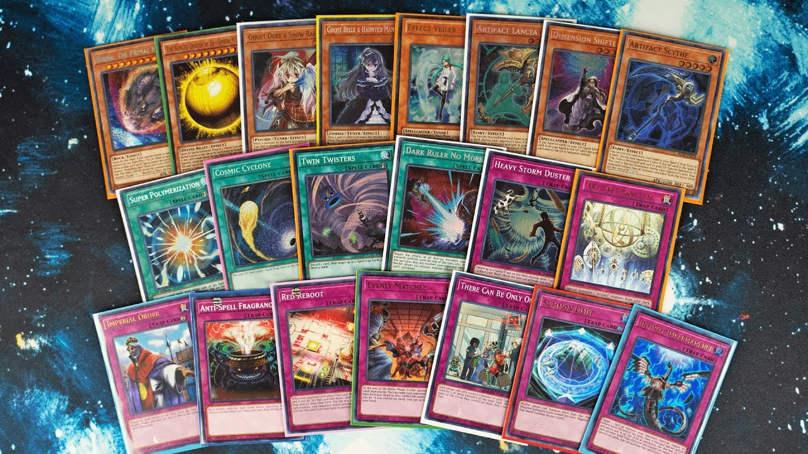

Yu-Gi-Oh is a Japanese manga series that began in 1996 and follows Yugi, a boy who solves a puzzle, more specifically the ancient Millennium Puzzle. In doing so he awakens an alter-ego known as Dark Yugi. It originally started by featuring stories where the alter-ego would defeat villians in different games. Then later changed the focus to the card game Duel Monsters which most people now know as Yu-Gi-Oh TCG, and what I'll be exploring today.
Building a deck in the TCG or trading card game is one of my favorite parts about the game other than competing in duels. For Yu-Gi-Oh there is a card limit to your deck of 40-60 cards in your main deck. Mostly any combination of cards you want to put together is allowed as long as you follow a list of forbidden and limited cards. As long as a card is not limited or foridden you can have up to three of that same card in your deck. The idea is to come up with a deck that minimizes your chance of drawing duds or bricks while having synergy. There is around 15,000 different cards so the possibilites can seem endless.
